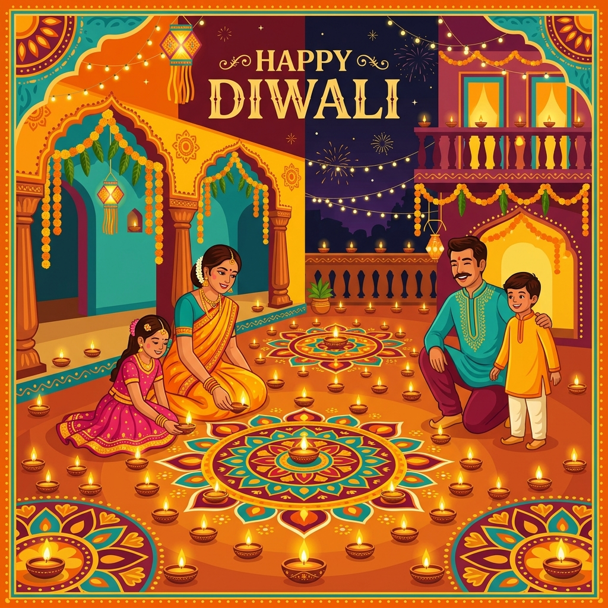
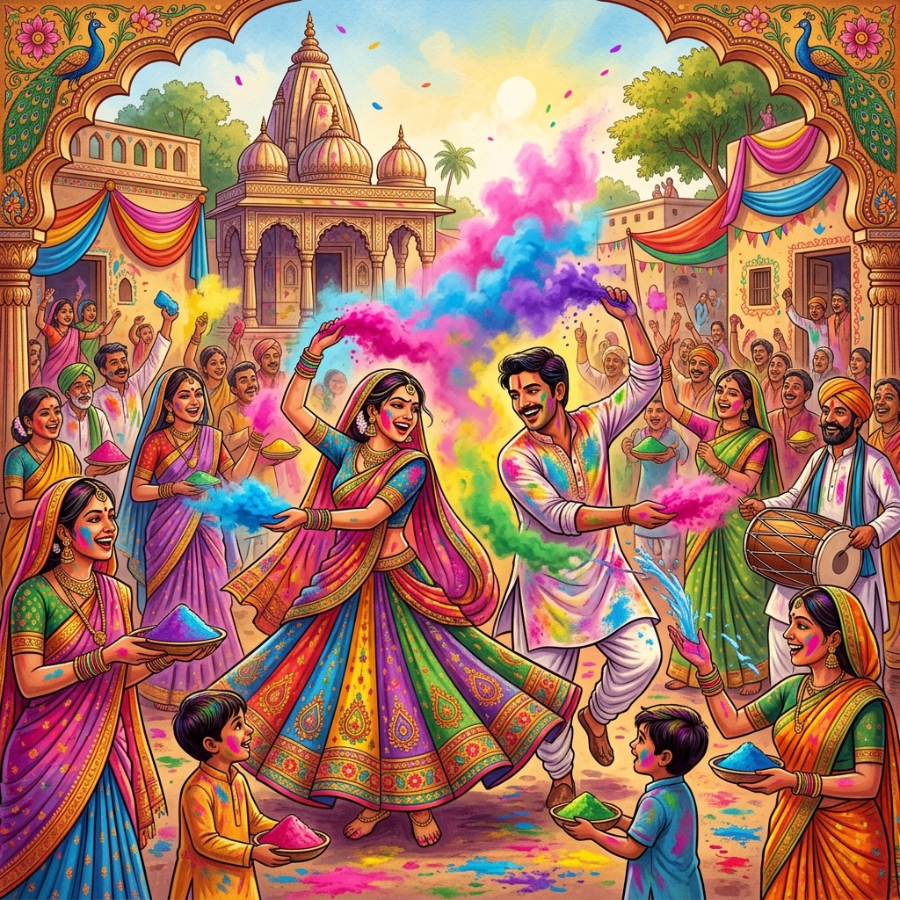
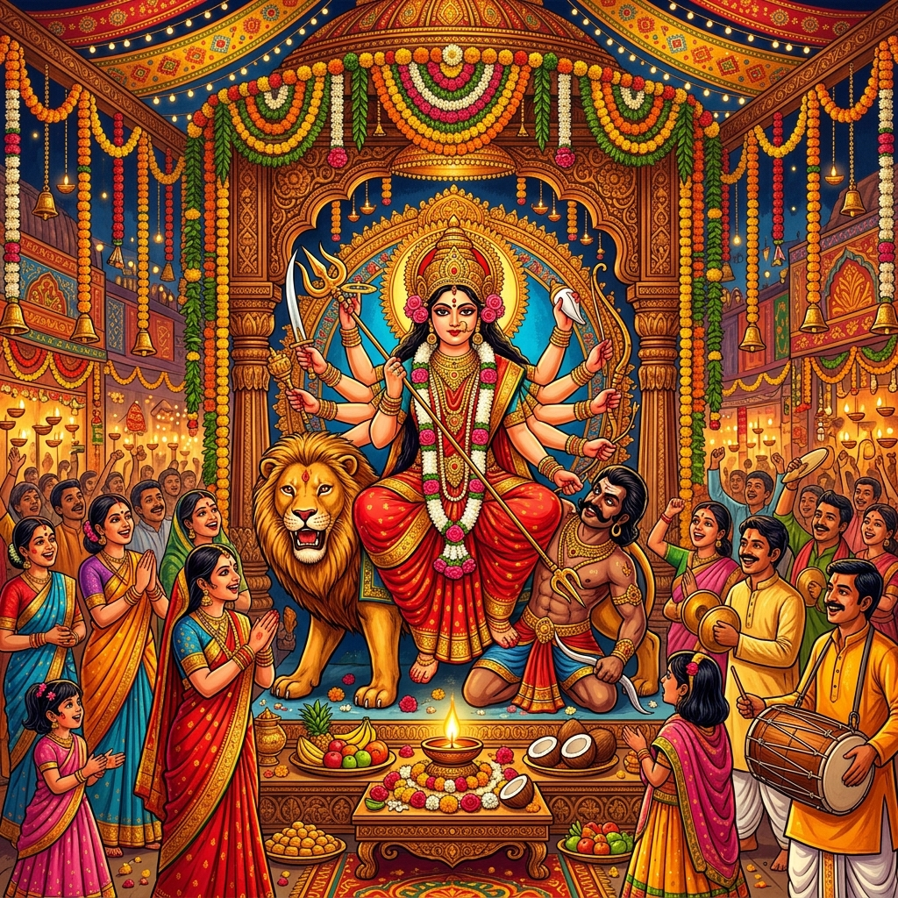

100+
Major Festivals
28 States
Unique Celebrations
8 Forms
Classical Dance Arts
5000+ Years
of Rich History
Major Indian Festivals
India celebrates thousands of festivals throughout the year — each carrying deep cultural, spiritual, and social significance.

Diwali – Festival of Lights
Diwali symbolises the victory of light over darkness. Families light diyas, burst fireworks, exchange sweets, and create intricate rangoli patterns at their doorsteps.
- 🪔 Clay diyas and oil lamps lit across homes
- 🎆 Fireworks light up the night sky
- 🍬 Sweets and gifts are exchanged
- 🎨 Rangoli designs decorate entrances

Holi – Festival of Colors
Holi marks the arrival of spring and the triumph of good over evil. People smear each other with gulal (colored powder) and celebrate with music, dance, and thandai.
- 🎨 Colored powder (gulal) thrown joyfully
- 🔥 Holika Dahan bonfire the night before
- 🍮 Thandai and gujiya are traditional treats
- 🎵 Dhol beats fill the streets

Navratri and Durga Puja
Navratri (nine nights) celebrates Goddess Durga's victory. In Bengal it becomes the grand Durga Puja. Garba and Dandiya Raas dances fill nights in Gujarat and Rajasthan.
- 💃 Garba and Dandiya Raas folk dances
- 🏛️ Elaborate pandals in West Bengal
- 🪔 Sindoor Khela on Vijaya Dashami
- 🥁 Cultural programs and processions
More Celebrated Festivals
Cultural Heritage of India
India's heritage spans millennia — from ancient temples and monuments to living traditions passed down through generations.

Taj Mahal, Agra – A UNESCO World Heritage Site
A Civilization Like No Other
India is home to one of the world's oldest civilizations, dating back over 5,000 years to the Indus Valley Civilization. Its heritage encompasses architecture, literature, philosophy, science, and the arts.
🏛️ UNESCO World Heritage Sites
India has 42 UNESCO World Heritage Sites including the Taj Mahal, Qutub Minar, Ajanta Caves, Ellora Caves, Hampi, Khajuraho temples, and the Sun Temple at Konark.
📜 Ancient Literature
The Vedas, Upanishads, Mahabharata, and Ramayana form the backbone of India's literary heritage. Sanskrit is one of the world's oldest languages.
🏺 Handicrafts and Art
India is renowned for Madhubani paintings, Warli art, Pattachitra, Bidriware, Pashmina shawls, Channapatna toys, and thousands of traditional crafts.
🧘 Yoga and Ayurveda
India gifted the world Yoga and Ayurveda — ancient systems of physical, mental, and spiritual well-being still practiced globally today.
Regional Celebrations
Every state of India has its own distinct festivals that reflect its unique geography, language, and history.
North India
UP, Punjab, Delhi, Rajasthan
- Kumbh Mela – world's largest gathering
- Baisakhi – Punjabi harvest festival
- Teej – women's monsoon festival
- Pushkar Camel Fair
- Lohri – bonfire harvest festival
South India
Tamil Nadu, Kerala, Karnataka, AP
- Onam – Kerala harvest with boat races
- Pongal – Tamil thanksgiving festival
- Mysuru Dasara – grand royal procession
- Thrissur Pooram – elephant festival
- Ugadi – Telugu and Kannada New Year
East India
West Bengal, Odisha, Bihar, Assam
- Durga Puja – grandest West Bengal festival
- Chhath Puja – Bihar's sun worship
- Rath Yatra – Puri's chariot festival
- Bihu – Assam's harvest festival
- Saraswati Puja – goddess of knowledge
West India
Gujarat, Maharashtra, Goa, Rajasthan
- Navratri Garba – nine nights of dance
- Ganesh Chaturthi – grand in Maharashtra
- Goa Carnival – Portuguese-influenced
- Makar Sankranti – kite festival
- Gudi Padwa – Maharashtrian New Year
Northeast India
Assam, Meghalaya, Manipur, Nagaland
- Hornbill Festival – Nagaland showcase
- Bihu – Assam's most important festival
- Wangala – Meghalaya harvest festival
- Yaoshang – Manipuri Holi celebration
- Losar – Buddhist New Year
Central India
MP, Chhattisgarh, Telangana
- Khajuraho Dance Festival – classical arts
- Tansen Music Festival
- Bastar Dussehra – tribal celebration
- Chakradharpur Music Festival
- Bonalu – Hyderabad goddess festival
Arts and Cultural Traditions
Indian arts and performing traditions are among the world's most sophisticated forms of human expression.
Classical Dance Forms
India has eight officially recognized classical dance forms, each tied to a specific region and rooted in ancient temple traditions. For Example,

Bharatanatyam – Classical dance from Tamil Nadu
🎵 Classical Music
India has two major classical music traditions — Hindustani (North) and Carnatic (South). Both are built around ragas and talas performed by legendary maestros like Ravi Shankar, M.S. Subbulakshmi, and Bismillah Khan.
🏺 Traditional Crafts
Indian handicrafts include Madhubani paintings (Bihar), Warli art (Maharashtra), Pattachitra (Odisha), Phulkari embroidery (Punjab), Kantha stitching (Bengal), and Pashmina shawls (Kashmir).
🍛 Culinary Heritage
Each festival has its signature dish — modak for Ganesh Chaturthi, gujiya for Holi, kheer for Eid, payasam for Onam, and prasadam for Diwali. Over 7,000 regional dishes make India a culinary paradise.
👘 Traditional Attire
Each region has distinctive dress — Kanjeevaram sarees (Tamil Nadu), Banarasi silk (UP), Lehenga-choli (Rajasthan), Pheran (Kashmir), and Lungi and Dhoti across South India.
About Incredible India
India is a land of extraordinary diversity — a subcontinent where over 1.4 billion people speaking more than 22 scheduled languages live side by side, celebrating a mosaic of cultures, religions, and traditions.
The essence of India's cultural spirit is captured in the phrase "Anekta mein Ekta" — Unity in Diversity. From the snow-capped Himalayas to the tropical beaches of Kerala, each region adds its own color to the grand tapestry of Indian civilization.
India's festivals are not merely religious observances — they are living expressions of its art, music, dance, cuisine, and community spirit, bringing people together in a shared celebration of life.